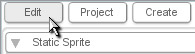
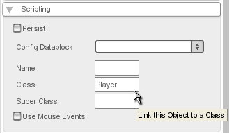

Setting an Object's Class
|
To change or set an object's class from the
Level Builder, select the object. Now, go to the Edit Tab (as
shown in Figure
1.1.1).
|

Figure 1.1.1
|
|
Next,
open the Scripting Section and type the name of the desired class into
the Class field (I set this object to be an instance of the 'Player'
class) (as shown
in Figure 1.1.2).
|

Figure
1.1.2
|
Brief Explanation of the Class field:
Although TorqueScript is not Object Oriented, Namespaces can be used to
similar effect. In script, the class we set will show up as a
namespace. For instance, I just set an object to be of type 'Player',
which means that in script, we could write something like:
function Player::onLevelLoaded(%this, %scenegraph)
{
%this.die();
}
function Player::die(%this)
{
%this.safeDelete();
}
All objects with their class set to Player will get this callback when
the level is loaded. Similarly, the object can call methods within its
namespace (like 'die' in this example) easily. %this is passed
automatically and refers to object it was called on.
Classes can be set in script when creating new objects or in datablocks too.